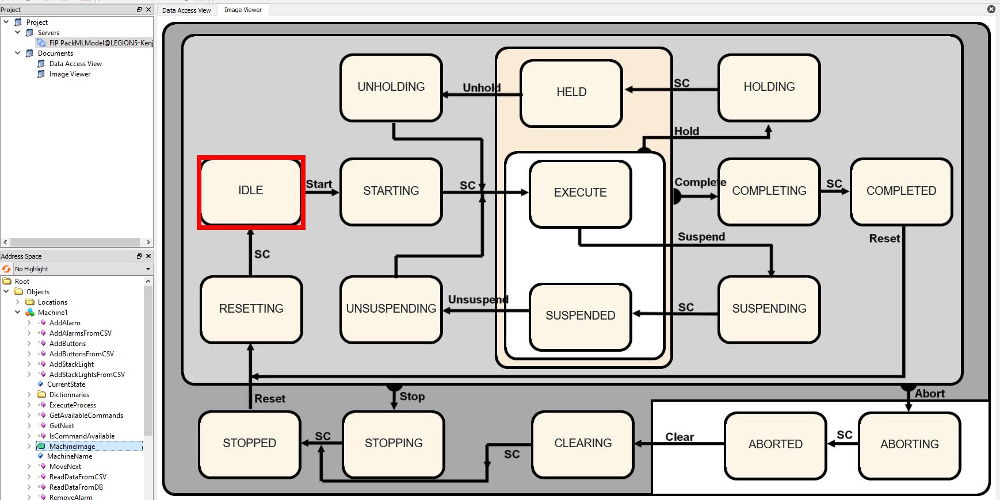

This application simulates state machines.
The user can then call methods on these machines to change their state.
A machine is defined by a number of features:
- The name of the machine (For example PrinterPaper, Printer3D, MillingMachine...)
- The state of the machine (idle, starting, resetting...)
- The alarms located in the machine (if any)
- The stack lights located in the machine (if any)
- The buttons located in the machine (if any)
The state machines were designed by following the implementation guide of PackML (.pdf).

A machine is in a certain state, and a transition may be applied to the machine to change its state.
For example, if the machine is in the state IDLE (like on the image above), then the following transitions may be applied:
- The transition "Start" will change the state to "STARTING".
- The transition "Stop" will change the state to "STOPPING".
- The transition "Abort" will change the state to "ABORTING".
If you try to apply a transition to the machine but the transition is not available (for example trying to apply the transition "Clear" when the machine is in the state "IDLE") will either:
- Throw an error and stop the program.
- Do nothing.
An alarm on a machine is defined by the following:
- Its ID.
- The message displayed when the alarm is triggered. (For example "No more paper in the printer".)
- The transition to apply (if there is one) when the alarm is triggered. (For example the "Hold" transition.)
(Note: If the transition is not available, the alarm gets triggered but the state doesn't change.)
- The state of the alarm. (ON/OFF)
Triggering an alarm will therefore:
- Apply the transition associated with the alarm (if there is one) to the state machine.
- Change the state of the alarm to ON.
Untriggering the alarm will simply change the state of the alarm to OFF.
A stack light on a machine is defined by the following:
- Its ID.
- Its description. (For example: "Red flashing", "Blue solid", "Horn"...)
- The state of the alarm (ON/OFF).
Triggering a stack light will change its state to "ON".
Untriggering a stack light will change its state to "OFF".
A button on a machine is defined by the following:
- Its ID.
- Its name. (For example: "Pause/Resume","Hold/Unhold", "Start"...)
- The actions to take. Which is a list of transitions.
Triggering a button will apply the first available transition from its list.
For example, if a button that has the following transitions is triggered: Suspend, Stop, Unhold, Start,
and the machine is in the state IDLE, then the transition "Stop" will be applied to the machine (and it will then change its state to "STOPPING")